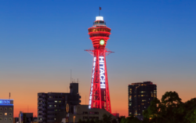
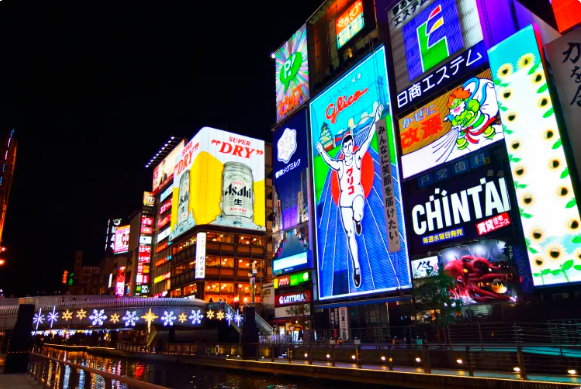
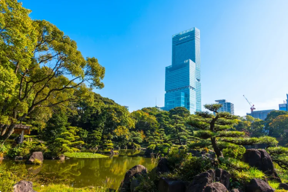

Tsutenkaku Tower
- Shinsekai is the place to experience the Osaka of old, and Tsutenkaku Tower is the defining landmark of the area.

Dotonbori & Shinsaibashi
- The Dotonbori district sits beside a 400-year-old canal. The bridge over the canal is a popular place to take your photo (look out for the Glico Man; the enormous runner towers over Ebisubashi Bridge and is a famous Osaka landmark).

Tennoji
- Tennoji and the surrounding Shinsekai area are a must-see district of Osaka, containing an array of culinary delights, a world-famous temple and more.
Osaka Castle & Around
- Osaka Castle and the pleasant park grounds surrounding it make for a relaxing escape from the city's concrete sprawl. Ascend to the top of castle keep tower to look over the expansive castle grounds and neighboring skyscrapers. Or bring a bento box and enjoy a picnic surrounded by groves of cherry and apricot trees which are amazing in bloom in the spring.